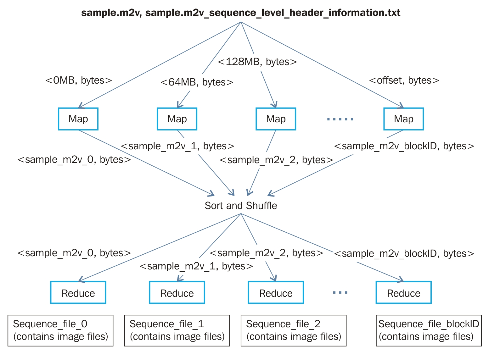

"In pioneer days they used oxen for heavy pulling, and when one ox couldn't budge a log, they didn't try to grow a larger ox. We shouldn't be trying for bigger computers, but for more systems of computers." | ||
| --Grace Hopper | ||
So far in this book, we discussed various deep neural network models and their concepts, applications, and implementation of the models in distributed environments. We have also explained why it is difficult for a centralized computer to store and process vast amounts of data and extract information using these models. Hadoop has been used to overcome the limitations caused by large-scale data.
As we have now reached the final chapter of this book, we will mainly discuss the design of the three most commonly used machine learning applications. We will explain the general concept of large-scale video processing, large-scale image processing, and natural language processing using the Hadoop framework.
The organization of this chapter is as follows:
The large amount of videos available in the digital world are contributing to the lion's share of the big data generated in recent days. In Chapter 2 , Distributed Deep Learning for Large-Scale Data we discussed how millions of videos are uploaded to various social media websites such as YouTube and Facebook. Apart from this, surveillance cameras installed for security purposes in various shopping malls, airports, or government organizations generate loads of videos on a daily basis. Most of these videos are typically stored as compressed video files due to their huge storage consumption. In most of these enterprises, the security cameras operate for the whole day and later store the important videos, to be investigated in future.
These videos contain hidden "hot data" or information, which needs to be processed and extracted quickly. As a consequence, the need to process and analyze these large-scale videos has become one of the priorities for data enthusiasts. Also, in many different fields of studies, such as bio-medical engineering, geology, and educational research, there is a need to process these large-scale videos and make them available at different locations for detailed analysis.
In this section, we will look into the processing of large-scale video datasets using the Hadoop framework. The primary challenge of large-scale video processing is to transcode the videos from compressed to uncompressed format. For this reason, we need a distributed video transcoder that will write the video in the Hadoop Distributed File System (HDFS), decode the bit stream chunks in parallel, and generate a sequence file.
When a block of the input data is processed in the HDFS, each mapper process accesses the lines in each split separately. However, in case of a large-scale video dataset, when it is split into multiple blocks of predefined sizes, each mapper process is supposed to interpret the blocks of bit-stream separately. The mapper process will then provide access to the decoded video frames for subsequent analysis. In the following subsections, we will discuss how each block of the HDFS containing the video bit-stream can be transcoded into sets of images to be processed for the further analyses.
Most of the popular video compression formats, such as MPEG-2 and MPEG-4, follow a hierarchical structure in the bit-stream. In this subsection, we will assume that the compression format used has a hierarchical structure for its bit-stream. For simplicity, we have divided the decoding task into two different Map-reduce jobs:
For the video files, a new FileInputFormat should be implemented with its own record reader. Each record reader will then provide a <key, value> pair in this format to each map process: <LongWritable, BytesWritable>. The input key denotes the byte offset within the file; the value that corresponds to BytesWritable is a byte array containing the video bit-stream for the whole block of data.
For each map process, the key value is compared with 0 to identify if it is the first block of the video file. Once the first block is identified, the bit-stream is parsed to determine the sequence level information. This information is then dumped to a .txt file to be written to HDFS. Let's denote the name of the .txt file as input_filename_sequence_level_header_information.txt. As only the map process can provide us the desired output, the reducer count for this method is set to 0.
Assume a text file with the following data:
Deep Learning
with Hadoop
Now the offset for the first line is 0 and the input to the Hadoop job will be <0,Deep Learning> and for the second line the offset will be <14,with Hadoop>.
Whenever we pass the text file to the Hadoop job, it internally calculates the byte offset.
InputFileFormat file and record reader should be kept same as the first Map-reduce job. Therefore, the <key, value> pairs of the mapper input is <LongWritable, BytesWritable>.

Figure 7.1: The overall representation of video decoding with Hadoop
BytesWritable input.<key, value> pair as the output of the map process. The key of this output of the map process encodes the input video filename and the block number as video_filename_block_number. The output value that corresponds to this key is BytesWritable, and it stores the JPEG bit-stream of the decoded video block.sample.m2v for illustration purposes. Further, in this chapter, we will discuss how to process the large-scale image files (from the sequence files) with the HDFS.